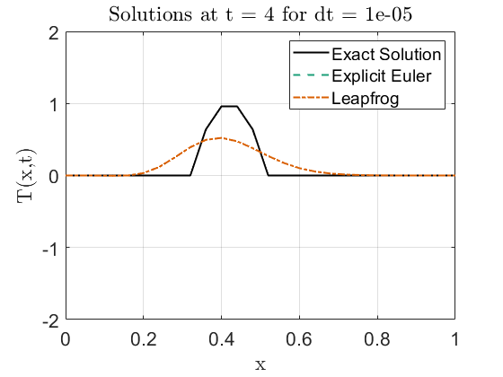

Contents
%{ @author: Benjamin Bemis Ph.D Student, Advisor: Dr Juliano Description: AME 60614: Numerical Methods Homework: 7 Due: 12/5/2024 %}
Preperation of the workspace
clear all clc close all fontsize = 16; % set(0,'DefaultFigureWindowStyle','default') set(0,'DefaultTextInterpreter','latex') set(0,'DefaultAxesFontSize',fontsize) set(0,'DefaultLegendFontSize',fontsize) colors = ["#000000","#1b9e77","#d95f02","#7570b3","#0099FF"]';
Setting data paths
Make sure to update this for the machine that you are working on. (Maybe, This should now run on any machine without change. 7/24/24) Change the current folder to the folder of this m-file.
if(~isdeployed) cd(fileparts(matlab.desktop.editor.getActiveFilename)); end addpath(cd) % cd ..; % Moving up a directory (from processing_code) basepath = cd; % Pulling the current directory imagepath = [basepath filesep 'images' filesep]; mkdir(imagepath);
Warning: Directory already exists.
Problem 9 Chapter 5 Part a
L = 1; % Length of the domain (0 ≤ x ≤ 1) Nx = 51; % Number of spatial points dx = L / (Nx - 1); % Spatial step size x = linspace(0, L, Nx); % Spatial grid u = 0.08; % Convection velocity dt_values = [0.0625, 0.03, 0.001]; t_end = 8; % End time % Exact solution function exact_solution = @(x, t, u) (x - u * t >= 0 & x - u * t <= 0.2) .* (1 - (10 * (x - u * t) - 1).^2); % Initial condition T = zeros(Nx, 1); for i = 1:Nx if x(i) <= 0.2 T(i) = 1 - (10 * x(i) - 1)^2; end end % Loop through different time steps and plot solutions for t = [0, 4, 8] for k = 1:length(dt_values) dt = dt_values(k); T_num_e = T; % Solution for Explicit Euler T_num_l = T; % Solution for Leapfrog Nt = round(t / dt); % Number of time steps % Time marching using Explicit Euler scheme for n = 1:Nt T_new_e = T_num_e; % Temporary array to store updated values % Update T using the central difference for spatial derivative for i = 2:Nx-1 T_new_e(i) = T_num_e(i) - (u * dt / (2 * dx)) * (T_num_e(i+1) - T_num_e(i-1)); end % Boundary Conditions: Zero at the endpoints T_new_e(1) = 0; T_new_e(Nx) = 0; % Update the solution for the next time step T_num_e = T_new_e; end T_prev = T; for n = 1:Nt if n == 1 T_new_l = T_num_l; for i = 2:Nx-1 T_new_l(i) = T_num_l(i) - (u * dt / (2 * dx)) * (T_num_l(i+1) - T_num_l(i-1)); end T_prev = T_num_l; % Save first step for Leapfrog else T_new_l = T_prev; for i = 2:Nx-1 T_new_l(i) = T_prev(i) - (u * dt / dx) * (T_num_l(i+1) - T_num_l(i-1)); end T_prev = T_num_l; % Update previous time step end % Boundary Conditions: Zero at the endpoints T_new_l(1) = 0; T_new_l(Nx) = 0; % Update the solution for the next time step T_num_l = T_new_l; end % Plot the results for both methods along with the exact solution T_exact = exact_solution(x, t, u); % Exact solution figure plot(x, T_exact, '-', 'LineWidth', 1.5, 'Color',colors(1)); hold on plot(x, T_num_e, '--', 'LineWidth', 1.5, 'Color',colors(2)); plot(x, T_num_l, ':', 'LineWidth', 1.5, 'Color',colors(3)); title(['Solution Comparison at t = ', num2str(t), ' for dt = ', num2str(dt)]); xlabel('x') ylabel('T(x,t)') legend('Exact Solution', 'Explicit Euler', 'Leapfrog'); grid on; print(gcf,[imagepath,'Solution',num2str(t),'_',num2str(dt),'.png'],'-dpng'); end end

Problem 9 Chapter 5 Part c
L = 1; % Length of the domain (0 ≤ x ≤ 1) Nx = 51; % Number of spatial points dx = L / (Nx - 1); % Spatial step size x = linspace(0, L, Nx); % Spatial grid u = 0.08; % Convection velocity dt_values = [0.8, 1, 1.1] * dx / u; % Time steps based on gamma t_end = 8; % End time % Exact solution function exact_solution = @(x, t, u) (x - u * t >= 0 & x - u * t <= 0.2) .* (1 - (10 * (x - u * t) - 1).^2); % Initial condition T = zeros(Nx, 1); for i = 1:Nx if x(i) <= 0.2 T(i) = 1 - (10 * x(i) - 1)^2; end end % Loop through different time steps (gamma values) and plot solutions for t = [0, 4, 8] for k = 1:length(dt_values) dt = dt_values(k); gamma = u * dt / dx; % Courant number T_num = T; % Solution array Nt = round(t / dt); % Number of time steps % Time marching using Lax–Wendroff scheme for n = 1:Nt T_new = T_num; % Temporary array to store updated values for i = 2:Nx-1 T_new(i) = T_num(i) ... - 0.5 * gamma * (T_num(i+1) - T_num(i-1)) ... + 0.5 * gamma^2 * (T_num(i+1) - 2*T_num(i) + T_num(i-1)); end % Boundary Conditions: Zero at the endpoints T_new(1) = 0; T_new(Nx) = 0; % Update the solution for the next time step T_num = T_new; end % Plot the results for each gamma value T_exact = exact_solution(x, t, u); % Exact solution figure plot(x, T_exact, '-', 'LineWidth', 1.5, 'Color', colors(1)); hold on plot(x, T_num, '--', 'LineWidth', 1.5, 'Color', colors(2)); title(['Lax--Wendroff Scheme at $t = ', num2str(t), ', \ \gamma = ', num2str(gamma), '$'], 'Interpreter', 'latex'); xlabel('x'); ylabel('T(x,t)'); ylim([-2 2]) legend('Exact Solution', 'Numerical Solution'); grid on print(gcf,[imagepath,'C_',num2str(t),'_',num2str(gamma),'.png'],'-dpng'); end end
Problem 9 Chapter 5 Part d
% Parameters L = 1; % Length of the domain (0 ≤ x ≤ 1) Nx = 26; % Number of spatial points dx = L / (Nx - 1); % Spatial step size x = linspace(0, L, Nx); % Spatial grid u = 0.08; % Convection velocity alpha = 0.001; % Diffusion coefficient dt_values = [0.2, 0.01, 0.00001]; % Time step values t_end = 8; % End time % Exact solution function exact_solution = @(x, t, u) (x - u * t >= 0 & x - u * t <= 0.2) .* (1 - (10 * (x - u * t) - 1).^2); % Initial condition T = zeros(Nx, 1); for i = 1:Nx if x(i) <= 0.2 T(i) = 1 - (10 * x(i) - 1)^2; end end for t = [0 4 8] for k = 1:length(dt_values) dt = dt_values(k); Nt = round(t / dt); % Number of time steps gamma = u * dt / (2*dx); beta = alpha * dt / dx^2; % Initialize solutions T_e = T; T_l = T; T_prev = T; % Time-stepping loop for n = 1:Nt % Explicit Euler update T_new_e = T_e; for j = 2:Nx-1 T_new_e(j) = T_e(j) - gamma * (T_e(j+1) - T_e(j-1)) + beta * (T_e(j+1) - 2 * T_e(j) + T_e(j-1)); end % Apply boundary conditions T_new_e(1) = 0; T_new_e(Nx) = 0; T_e = T_new_e; end for n = 1:Nt if n == 1 T_new_l = T_l; for j = 2:Nx-1 T_new_l(j) = T_l(j) - gamma * (T_l(j+1) - T_l(j-1)) + beta * (T_l(j+1) - 2 * T_l(j) + T_l(j-1)); end T_prev = T_l; % Save first step for Leapfrog else T_new_l = T_prev; for j = 2:Nx-1 T_new_l(j) = T_prev(j) - 2*gamma * (T_l(j+1) - T_l(j-1)) + 2* beta * (T_l(j+1) - 2 * T_l(j) + T_l(j-1)); end T_prev = T_l; % Update previous time step end % Boundary Conditions: Zero at the endpoints T_new_l(1) = 0; T_new_l(Nx) = 0; % Update the solution for the next time step T_l = T_new_l; end % Plot solution at selected times T_exact = exact_solution(x,t,u); figure; plot(x, T_exact, '-', 'LineWidth', 1.5, 'Color', colors(1)) hold on; plot(x, T_e, '--', 'LineWidth', 1.5, 'Color', colors(2)); plot(x, T_l, '-.', 'LineWidth', 1.5, 'Color', colors(3)); title(['Solutions at t = ', num2str(t), ' for dt = ', num2str(dt)]) xlabel('x') ylabel('T(x,t)') legend('Exact Solution', 'Explicit Euler', 'Leapfrog'); grid on ylim([-2 2]) xlim([0,1]) print(gcf,[imagepath,'D_',num2str(t),'_',num2str(gamma),'.png'],'-dpng'); end end